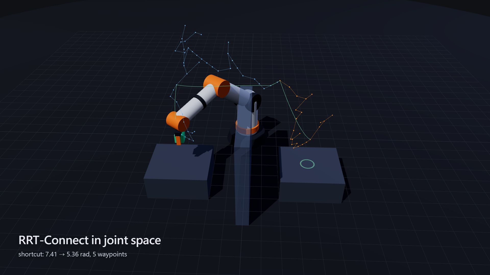

Interactive model · 互動模型

Move or rotate the target, switch between damped least squares and the Jacobian transpose, plan to the target, or run a full pick and place over the wall. Built for a desktop screen.
Demo film · 示範影片
Measured results · 實測數字
| IK round trip | 1000 / 1000 random reachable poses solved, worst position error 0.0098 mm, worst orientation error 0.0055°; median 14 iterations |
|---|---|
| Local tracking (seed ±0.15 rad) | Damped least squares 300 / 300 in 3.0 iterations on average; Jacobian transpose 235 / 300 in 406 |
| Planning over the wall | 20 / 20 seeds succeed, 20 ms and 66 tree nodes on average (Node.js) |
| Shortcutting | Joint-space path 7.05 → 5.36 rad, 4.8 waypoints on average |
| Collision check of the result | Every shortcut edge re-checked at 0.005 rad, every timed trajectory every 5 ms: no contact |
| Time scaling | Peak 100.0 % of joint speed and acceleration limits, never above; rest at both ends |
Reproduce with node tests/test.mjs (source).
Method · 方法
Arm. A generic six-axis arm with a spherical wrist: 0.30 m to the shoulder, 0.35 m upper arm, 0.32 m forearm to the wrist centre, 0.10 m tool. Forward kinematics chains one rotation per joint; the same chain drives the 3D model, the Jacobian and the collision capsules.
Inverse kinematics. Geometric Jacobian, with orientation rows scaled by a 0.3 m length so millimetres and radians weigh alike. The step is the Levenberg–Marquardt form of damped least squares, with the damping tied to the remaining error (Sugihara 2011):
Δq = (JᵀJ + λ²I)⁻¹ Jᵀe, λ² = ½ eᵀe + 10⁻⁶Damping is large when the target is far away or the arm is near a singularity, and vanishes at the solution, so convergence ends quadratically. If the solver gets stuck at a joint limit it restarts from a random seed. Manipulability is shown as Yoshikawa's measure, relative to the 95th percentile over random configurations:
w = √det(J Jᵀ)Collision model. Each link is a capsule; obstacles are boxes. Segment–box distance is exact (ternary search on a convex distance), and segment–segment distance follows Ericson. A carried part becomes an extra sphere at the tool.
Planning. RRT-Connect (Kuffner & LaValle 2000) grows one tree from the start and one from the goal in joint space, with a 0.15 rad step and edges checked every 0.02 rad. Random shortcutting followed by a greedy pass then removes detours.
Time scaling. Each straight joint-space segment is synchronised so every joint starts and stops together, with either a quintic or a trapezoidal profile. The duration is the shortest that keeps every joint within its limits:
s(τ) = 10τ³ − 15τ⁴ + 6τ⁵, T = maxᵢ max( 1.875·|Δqᵢ| / vᵢ , √(5.774·|Δqᵢ| / aᵢ) )Straight-line approach and retreat moves are solved by IK at 12 points and timed as one quintic along the whole line, so the tool does not stop at each point.
Source · 原始碼
- kin.js: forward kinematics, Jacobian, damped least squares and Jacobian-transpose IK, manipulability
- plan.js: capsule collision checks, RRT-Connect, shortcutting, quintic and trapezoidal time scaling
- app.js: the three.js view, target gizmo, plots and the scripted film camera
three.js is MIT-licensed (licence).